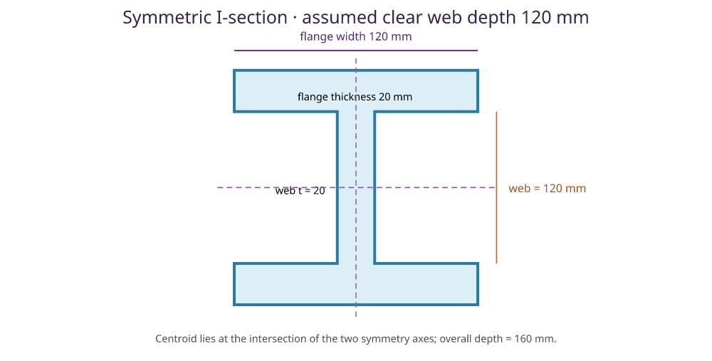
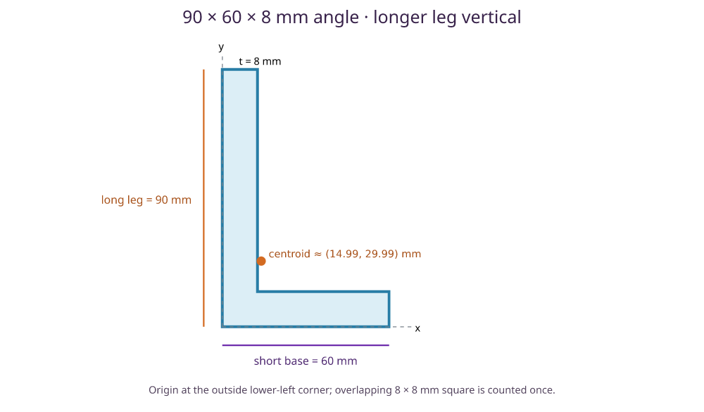
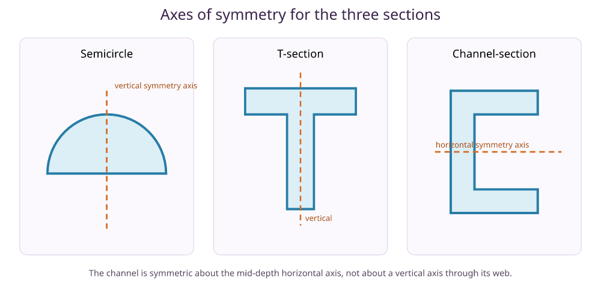
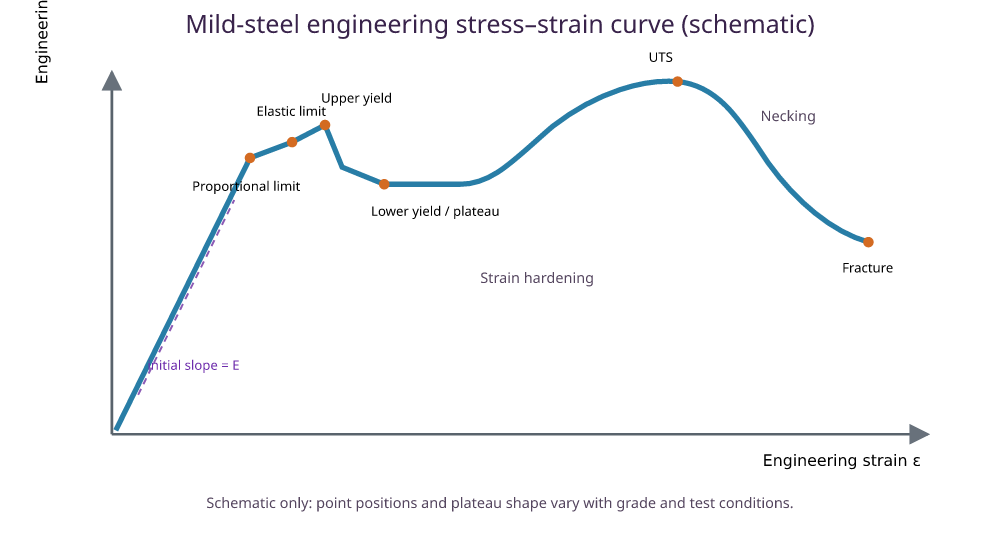
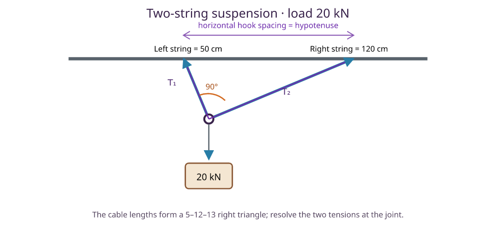

Updated supplied study solution — English only. આ નવો આપેલો ઉકેલ માત્ર અંગ્રેજીમાં છે; ભાષા બદલવાથી જવાબોનું ભાષાંતર થતું નથી. Unofficial model answers, not a GTU marking scheme; answers have not been independently verified.
The original Winter 2025 question PDF was not found in the supplied Drive files. This reader preserves the Winter questions and answers from the combined source HTML; the Summer PDF is not linked to this exam.
Basics of Applied Mechanics
All printed parts and all OR alternatives from this paper are included. Expand a card for definitions, diagrams, derivations and worked numerical answers; select one complete printed OR branch when practising.
The supplied English paper labels this version authentic. The English wording and marks are followed here.
Question 1
Printed wording, marks and worked study solution
Q1(a)Define: (i) Mechanical Advantage (ii) Velocity Ratio (iii) Efficiency.3 marks
Model answer · 3 marks
- Mechanical advantage (MA): ratio of load lifted to applied effort, MA = W/P.
- Velocity ratio (VR): ratio of the distance moved by the effort to the distance moved by the load in the same time, VR = sP/sW.
- Efficiency: ratio of useful output work to input work. For a lifting machine, η = MA/VR; as a percentage, η% = (MA/VR)×100.
For an ordinary real machine 0 < η < 1 because some input work is lost to friction and other effects.
Q1(b)Separate scalar and vector quantities: Velocity, Speed, Distance, Displacement, Force, Density, Mass, Weight.4 marks
Model answer · 4 marks
| Scalars — magnitude only | Vectors — magnitude and direction |
|---|---|
| Speed | Velocity |
| Distance | Displacement |
| Density | Force |
| Mass | Weight |
Weight is a gravitational force (near Earth, W = mg, directed downward); do not classify it as a scalar merely because its magnitude is often quoted.
Q1(c)Four forces act at a point: 500 N North-East, 400 N East, 250 N at 30° west of north, and 300 N at 30° west of south. Find the magnitude and direction of the resultant analytically or graphically.7 marks
Model answer · 7 marks
Resolve each force on axes +x east, +y north. The directions measured counter-clockwise from east are 45°, 0°, 120° and 240° respectively.
= 353.553 + 400 − 125 − 150 = 478.553 N
Ry = 500 sin45° + 250 sin120° + 300 sin240°
= 353.553 + 216.506 − 259.808 = 310.252 N
θ = tan⁻¹(Ry/Rx) = 32.96° north of east
Both components are positive, so the resultant lies in the north-east quadrant. A scale drawing with the same vector directions should give approximately the same value.
Q1(c) — ORFind centroidal moments of inertia Ixx and Iyy for a symmetric I-section whose flange and web dimensions are each 120 × 20 mm.7 marks
Model answer · 7 marks
Section interpretation: two 120 × 20 mm flanges are joined by a 20 mm-thick, 120 mm-clear-height web; overall depth H = 20+120+20 = 160 mm. By symmetry the centroid is at mid-depth and mid-width.
Distance from centroid to each flange centre: d = 80−10 = 70 mm
= 26.56 × 10⁶ mm⁴
Iyy = 2[20(120³)/12] + 120(20³)/12
= 5.84 × 10⁶ mm⁴
The larger Ixx reflects the flanges being far from the horizontal centroidal axis.
Assumption / convention: If 120 mm is intended as the overall section depth rather than the clear web height, the web clear height is 80 mm; under that alternative convention Ixx = 13.013×10⁶ mm⁴ and Iyy = 5.813×10⁶ mm⁴.

Question 2
Printed wording, marks and worked study solution
Q2(a)State and explain Lami’s theorem.3 marks
Model answer · 3 marks
If a particle is in equilibrium under three coplanar, concurrent, non-collinear forces P, Q and R, each force is proportional to the sine of the angle between the other two:
Here α is the included angle between Q and R (opposite P), and similarly for β and γ. The theorem follows by constructing the closed triangle of the three force vectors and applying the sine rule. It applies only to three-force equilibrium, not an arbitrary force system.
Q2(b)Explain the characteristics of a force.4 marks
Model answer · 4 marks
A force is a vector action on a body. To specify it fully, state:
- Magnitude and unit (newton, N).
- Direction and sense (which way along its direction line).
- Line of action (the straight line on which it acts).
- Point of application on the body.
A force can change translation, produce rotation about a point/axis, or deform a body. Its turning effect about O is the moment MO = F × perpendicular distance to the line of action.
Q2(c)A single-purchase crab has an 800 mm handle, a 200 mm load-drum diameter, a 20-tooth pinion and a 100-tooth spur wheel. A 150 N effort lifts 4.5 kN. Find VR, MA, efficiency and say whether the machine is reversible.7 marks
Model answer · 7 marks
Let handle radius rh = 800 mm and drum radius rd = 100 mm. In one handle revolution the pinion turns the spur wheel/load drum through 20/100 revolution.
= (800/100)(100/20) = 40
MA = W/P = 4500/150 = 30
η = MA/VR = 30/40 = 0.75 = 75%
By the usual lifting-machine criterion, η > 50% indicates a reversible machine: on removing effort, the descending load can overcome friction and drive the mechanism backwards. This is the ideal textbook criterion; an actual machine also depends on its brake/ratchet and operating conditions.
Q2(a) — ORDefine (i) Elasticity (ii) Ductility (iii) Malleability.3 marks
Model answer · 3 marks
- Elasticity: ability of a material to recover its original size and shape after unloading, within its elastic range.
- Ductility: ability to undergo appreciable plastic deformation in tension before fracture; it is commonly indicated by elongation or reduction in area.
- Malleability: ability to undergo plastic shaping under compressive action, for example rolling or hammering into sheet.
Elasticity concerns recovery; ductility and malleability concern plastic forming in different loading modes.
Q2(b) — ORExplain the conditions of equilibrium of coplanar concurrent forces.4 marks
Model answer · 4 marks
For coplanar concurrent forces, choose perpendicular in-plane axes x and y through the common point. Static equilibrium requires the vector sum to be zero:
Equivalently, the force polygon closes. Since all lines of action pass through the common point, each force has zero moment about that point, so a separate moment equation is not needed for this concurrent system. For non-concurrent coplanar forces, also require ΣM = 0 about a point.
Q2(c) — ORA simple lifting machine raises 60 kN with 3 kN effort and 100 kN with 4 kN effort; VR = 50. (i) Derive the law of machine. (ii) Find effort for 200 kN. (iii) Find maximum efficiency.7 marks
Model answer · 7 marks
Take the usual linear law P = mW + C, where P and W are in kN. Use the two observations:
C = 3−0.025(60) = 1.5 kN
Law: P = 0.025W + 1.5
MAmax = 1/m = 40
ηmax = MAmax/VR = 40/50 = 0.80 = 80%
Maximum efficiency is the limiting value as load becomes large in the linear machine-law model; the constant no-load effort C then contributes a diminishing fraction of total effort.
Question 3
Printed wording, marks and worked study solution
Q3(a)Define (i) Centroid (ii) Centre of gravity.3 marks
Model answer · 3 marks
- Centroid: geometric mean position of a line, area or volume. For a plane area, x̄ = ΣAx/ΣA and ȳ = ΣAy/ΣA.
- Centre of gravity (CG): point through which the resultant gravitational force (the body's total weight) acts.
For a uniform homogeneous lamina in a uniform gravitational field, the centroid and CG coincide.
Q3(b)State and explain the polygon law of forces.4 marks
Model answer · 4 marks
If several concurrent forces acting on a point are represented in magnitude and direction by successive sides of a polygon taken head-to-tail, the closing side drawn from the tail of the first vector to the head of the last represents their resultant in magnitude and direction.
If the force polygon closes, its closing side has zero length and the resultant is zero: the forces are in equilibrium. Draw every vector to a consistent scale and preserve its direction when placing it head-to-tail.
Q3(c)Find the centroid of an Indian Standard Angle section 90 × 60 × 8 mm, with the longer leg vertical and the shorter leg as the base.7 marks
Model answer · 7 marks
Take origin at the outside lower-left corner, x to the right and y upward. Use vertical rectangle 8×90, horizontal rectangle 60×8, and subtract their 8×8 overlap once.
x̄ = [720(4)+480(30)−64(4)]/1136 = 14.986 mm
ȳ = [720(45)+480(4)−64(4)]/1136 = 29.986 mm
Therefore the centroid is approximately 14.99 mm from the outer vertical edge and 29.99 mm above the outside base. Uniform thickness and square-corner geometry are assumed.

Q3(a) — ORDraw axes of symmetry for (i) a semicircle (ii) a T-section (iii) a channel section.3 marks
Model answer · 3 marks
Semicircle: one axis, the line through the circle centre perpendicular to the diameter (the vertical bisector of the semicircle when its diameter is horizontal).
Symmetric T-section: one vertical axis through the middle of the web and flange.
Symmetric channel-section: one horizontal axis midway between the equal top and bottom flanges. The usual open channel is not symmetric about a vertical axis through its web.

Q3(b) — ORDifferentiate between centroid and centre of gravity.4 marks
Model answer · 4 marks
| Centroid | Centre of gravity |
|---|---|
| Geometric mean position of a line, plane area or volume. | Point of application of the resultant weight of a body. |
| Depends on geometry and the chosen geometric region; no mass distribution or gravity is required. | Depends on mass distribution and the gravitational field. |
| Used for locating the centre of area in section calculations. | Used for the resultant gravitational force and weight moments. |
| They coincide for a homogeneous body in a uniform gravitational field (and for a uniform-density lamina, the area centroid is its CG). | |
Q3(c) — ORFind Ixx for a Tee section whose flange and web dimensions are both 200 × 50 mm.7 marks
Model answer · 7 marks
Assumption used: the web is 200 mm deep below the flange; the flange is 200 mm wide × 50 mm thick. The rectangles meet edge-to-edge, so overall depth is 250 mm. Measure y from the bottom of the web.
Flange: Af=200(50)=10,000 mm², yf=225 mm
ȳ = [10,000(100)+10,000(225)]/20,000 = 162.5 mm
+ 200(50³)/12 + 10,000(62.5²)
= 113.542 × 10⁶ mm⁴
The neutral/centroidal x–x axis is horizontal and passes through the composite centroid.
Assumption / convention: If 200 mm means the overall Tee depth, the web clear depth would be 150 mm; then ȳ = 132.143 mm from the bottom and Ixx = 59.003×10⁶ mm⁴. The paper does not explicitly say which vertical dimension convention is intended.
Question 4
Printed wording, marks and worked study solution
Q4(a)Enlist various tests carried out on metals.3 marks
Model answer · 3 marks
Common tests include:
- Mechanical: tensile, compression, bend, torsion, impact (Izod/Charpy), hardness (Brinell/Rockwell/Vickers), fatigue and creep tests.
- Physical/chemical: density, electrical/thermal properties, composition and corrosion tests.
- Non-destructive examination: visual, dye-penetrant, magnetic-particle, ultrasonic and radiographic tests.
The selected test depends on the property or discontinuity being assessed; these methods are not interchangeable.
Q4(b)Draw and explain the stress–strain curve with all salient points for a tension test on a mild-steel bar.4 marks
Model answer · 4 marks
Plot engineering stress σ = load/original area against engineering strain ε = extension/original gauge length. The initial straight portion obeys Hooke’s law; its slope is Young’s modulus E. The proportional limit ends linearity; the elastic limit is the last stress with no permanent set after unloading. Mild steel may show an upper yield point, a drop to a lower yield point and a yield plateau. During strain hardening stress rises to the ultimate tensile strength (UTS). Necking then localises deformation and engineering stress falls to fracture.
Yield features vary with steel grade and test conditions; true stress differs from engineering stress after the area starts to shrink.

Q4(c)A 1.5 m long, 25 mm diameter mild-steel bar carries 100 kN axially in tension. For E = 2×10⁵ N/mm², find stress, strain, elongation and final length.7 marks
Model answer · 7 marks
Assume a uniform circular bar and linear-elastic axial response. Convert L = 1500 mm, P = 100,000 N.
σ = P/A = 100,000/490.874 = 203.72 N/mm² (MPa)
ε = σ/E = 203.72/(2×10⁵) = 0.0010186
ΔL = εL = 0.0010186(1500) = 1.528 mm
Lfinal = 1500+1.528 = 1501.528 mm ≈ 1.50153 m
Q4(a) — ORDefine (i) Resilience (ii) Proof Resilience (iii) Modulus of Resilience.3 marks
Model answer · 3 marks
- Resilience: ability of a material to absorb and release energy within its elastic range.
- Proof resilience: maximum strain energy stored by the whole body up to the adopted elastic limit.
- Modulus of resilience: proof resilience per unit volume. For linear elasticity to limiting elastic stress σe, ur = σe²/(2E).
The limiting stress must be stated or understood for the material/test convention.
Q4(b) — OREnlist factors affecting selection of materials.4 marks
Model answer · 4 marks
- Required mechanical and physical properties: strength, stiffness, ductility, toughness, hardness, density and fatigue/creep performance.
- Service conditions: load type, temperature, wear, corrosion, environment and expected life.
- Manufacturing and joining: casting/forming/machining/welding, heat treatment, tolerances and repairability.
- Availability, grade certification, cost, transport/weight, maintenance, safety and environmental/recycling impact.
Select a grade against the component's actual function and evidence, not from one property alone.
Q4(c) — ORA 25 mm diameter steel bar is fixed between walls 4 m apart at 80°C; temperature falls to 10°C. Find stress and force for (i) non-yielding walls and (ii) walls yielding by 2 mm. E = 2×10⁵ N/mm², α = 12×10⁻⁶/°C.7 marks
Model answer · 7 marks
Cooling is ΔT = 10−80 = −70°C. The free change would be αLΔT = 12×10⁻⁶(4000)(−70) = −3.36 mm (contraction). Area A = π(25²)/4 = 490.874 mm².
(i) Rigid/non-yielding supports: total length change is zero, so σ = −EαΔT = +168 MPa tensile. Force = σA = 168(490.874) = 82.47 kN tensile.
(ii) Supports yield toward one another by 2 mm: take support spacing change δs = −2 mm. Compatibility gives σ = E(δs/L − αΔT) = 2×10⁵(−2/4000 + 0.00084) = +68 MPa tensile. Force = 68(490.874) = 33.38 kN tensile.
Assumption / convention: Interprets ‘walls yield by 2 mm’ as a 2 mm reduction in wall spacing, i.e. movement that permits part of the bar's cooling contraction. If displacement direction differs, its signed value must be changed in the compatibility equation.
Question 5
Printed wording, marks and worked study solution
Q5(a)State and explain the parallel-axis theorem.3 marks
Model answer · 3 marks
For a plane area A, the second moment of area about an axis parallel to a centroidal axis and at perpendicular distance d is:
Here IG is about the parallel axis through the area centroid. It follows by expanding ∫(y+d)²dA; the first-moment term vanishes because the reference axis passes through the centroid. For mass moment of inertia the analogous relation is I = IG + Md².
Q5(b)Define (i) Linear strain (ii) Lateral strain (iii) Poisson’s ratio (iv) Volumetric strain.4 marks
Model answer · 4 marks
- Linear (longitudinal) strain: axial change in length divided by original length, εL = ΔL/L.
- Lateral strain: transverse change in a dimension divided by its original value, e.g. εlat = Δd/d.
- Poisson’s ratio: ν = −εlat/εL in uniaxial elastic loading; the minus sign makes ν positive for the usual tensile lateral contraction.
- Volumetric strain: change in volume divided by original volume, εv = ΔV/V. For small strains, εv ≈ εx+εy+εz.
Q5(c)(i) Two 100 kN forces act at 60°; find the resultant magnitude and direction. (ii) A 20 kN body hangs from 50 cm and 120 cm strings attached to hooks 130 cm apart; the strings meet at right angles at the body. Find both tensions.7 marks
Model answer · 7 marks
(i) Equal-force resultant: the resultant lies on the angle bisector.
Direction = 30° to either force, between them.
(ii) Strings: lengths 50, 120 and 130 cm form a 5–12–13 right triangle. With the 50 cm string steep and the 120 cm string flatter, their unit direction components are (5/13 horizontally, 12/13 vertically) and (12/13 horizontally, 5/13 vertically).
Vertical balance: (12/13)T50 + (5/13)T120 = 20
T50 cm = 18.46 kN; T120 cm = 7.69 kN

Q5(a) — ORDefine polar moment of inertia and write its equation for a circular shaft.3 marks
Model answer · 3 marks
The polar moment of area J about an axis normal to the cross-section through a point is the area integral of squared radial distance: J = ∫r²dA = Ix+Iy for perpendicular in-plane axes through that point. For circular shafts:
Hollow: J = π(D⁴−d⁴)/32
These are area moments with units of length⁴; they govern the elementary elastic torsion of circular shafts.
Q5(b) — ORWrite the assumptions made in the theory of torsion.4 marks
Model answer · 4 marks
- The shaft is straight, prismatic, circular and of uniform material/section over the considered length.
- Material is homogeneous, isotropic and linearly elastic (Hooke's law in shear); stresses remain within the elastic range.
- Twist is small and uniform; the shaft carries torque about its longitudinal axis, away from local end effects.
- Plane cross-sections normal to the axis remain plane and circular after twist; radial lines remain straight, with no warping.
These assumptions support the elementary circular-shaft relation τ/r = T/J = Gθ/L; do not use it directly for arbitrary non-circular shafts.
Q5(c) — ORA solid shaft 100 mm in diameter rotates at 250 rpm and transmits 200 kW. Find the maximum shear stress.7 marks
Model answer · 7 marks
Assume steady power transmission, uniform solid circular shaft and elastic torsion.
T = P/ω = 200,000/26.180 = 7639.4 N·m = 7.6394×10⁶ N·mm
τmax = 16T/(πd³) = 16(7.6394×10⁶)/[π(100³)]
= 38.91 N/mm² = 38.91 MPa